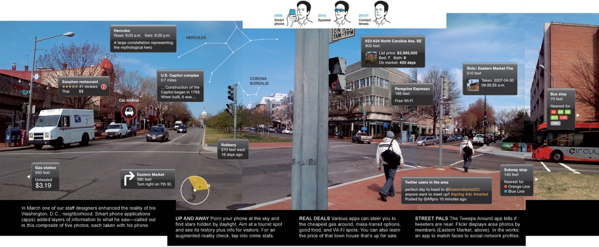
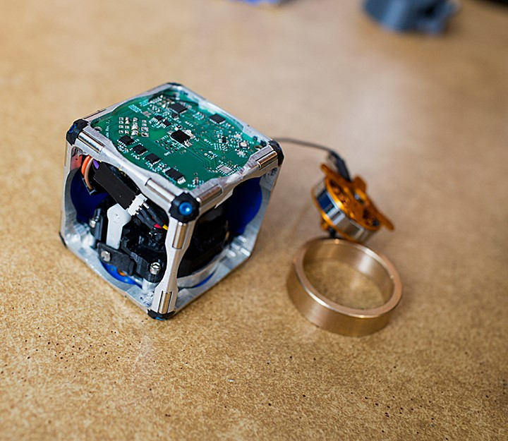
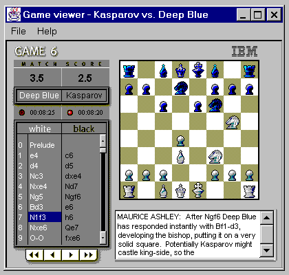

Technical Section

Contents
- AUGMENTED REALITY
- DEADLY MACHINES OF ANCIENT TIMES
- M-BLOCKS ROBOTS – A BOT COMPLETE IN ITSELF
- NOT SO ARTIFICIAL
- VOICE CHARGING
- ZERO DAY VULNERABILITY
AUGMENTED REALITY
For a digitally enhanced view of real environment, a new technology i.e., Augmented reality is here by which we can get a digitally modified view of physical and real time environment which increases user’s virtual perception. This technology senses input signals like sound, videos, graphic etc. using sensors technology available on devices and provide its enhance and descriptive view digitally. It brings the virtual world to the reality with a new 3-D experience. In Augmented displays all graphics, videos, elements appears with description along with the audio output.
In today’s scenario, there are so many smart applications available which are integrated with this technology and present the best use of augmented reality technology. Some of the popular applications of Augmented Reality are QR-Code Reader, Word lens, AR Compass, Google Glasses etc. which have made a very impressive impact on modern technology.
Another most widely increasing application of augmented reality is in ‘Virtual Gaming’. In Gaming, augmented technology allows user to conquer territory virtually by allowing graphic from screen to pull in the real world which is a attracting a mass population of users toward virtual world of Augmented Reality. Other best use of the technology is conversion of different foreign languages into tourist’s local understandable language by just a virtual input of description, signal and other useful documents.
With the modernization of technology, Augmented Reality is integrating the new virtual world to real physical world with so many new impressive features and functions which is the point of attraction for every technology enthusiast.
DEADLY MACHINES OF ANCIENT TIMES
We often say “though we cannot decide how we take birth on earth but, we can at least have a thought about how we would like to die”. Now, let me tell you that there was a time when people were not even given the freedom to think. They did not have any rights, and even a small offence committed by them led towards torture or death. Death machines in ancient times were designed to provide the highest degree of torture and were very advanced. All these were used with a belief that these types of punishments would teach a lesson to the guilty and help cleanse the society. After knowing about these machines, I bet you would rather feel sorry for the criminal or the guilty!
Let us now start having a look at some of these devious devices.THE BRAZEN BULL
This was an execution device which was used by the ancient Greek. The bull was made up entirely of bronze and was hollow from inside with a door on one side. The guilty was put inside and locked, with a fire lighted beneath the bull. The metal was heated until the person inside was roasted to death. Screaming of the person was used to entertain the people and the executioners around! Can you even picture this! Limit of cruelty!
THE ELECTRIC CHAIR.
AThe victim was tied to the chair and two electrodes
were attached to his body, one on the head and
the other on the leg to create a closed path for the
current to flow. And then, current was passed
through the victim’s body, gradually raised to
2000 volts, leading to the immediate death
THE RACK
Again designed for brutality. It contained a rectangular platform with two rollers attached on either side. The guilty was made to lie down, his wrists and feet were chained to the respective rollers and then with the help of a rollers were rolled along and also the chains. This increasing force stretched the victim’s body, giving excruciating pain. Thai was continued till the victim’s shoulder and hip joints broke leading to death.
THE PENDULUM
Personally, I think this is the worst on crossing all limits of torture and pain. In this, the guilty was made to lie down on a rectangular platform and was tied to it. Above him was a blade which was made to swing to and fro, and it was gradually lowered. This lead to gradual cutting of the victim’s stomach and intestines. This was done slowly for at least 1-2 days.
THE GARROTE
The person was tied to a wooden stake with the help of a rope around his neck. This rope was twisted and tightened by the executioner till the person died. As technology improved, the wooden stake was replaced by a wooden chair and the rope with a metal band.
These were just a few, there were many. So what do you think now? Was this the apt way of punishing? Was this the apt usage of machines?
M-blocks Robots – A bot complete in itself

Let’s imagine a world where robots can assemble to make a wall, bridge or shelter during a calamity or emergency situation or could be formed into a chair, a ladder, or a desk, on demand. Let’s stop here and start from beginning with what kind of robots do we expect and what kind of robot is available as of now. Well the difference between the two is huge.
What we have is-
Huge machines that work on specific tasks.
Robots those are architecture specific.
Super smart robots that can modify according to our needs, as and when required. Robots that are light weight and can change its shape, leap, self-assemble and climb by self on any terrain. So what we want is basically modular robots.
And the questions are-
What are they? Basically these are modular self-reconfiguring robotic systems are autonomous kinematic machines with variable morphology.
Why do we need them? Because they are able to deliberately change their own shape by rearranging the connectivity of their parts, in order to adapt to new circumstances, perform new tasks, or recover from damage.
Which type of modular robots are we talking about and what makes them different? M-blocks – these robots are cubes without any external moving parts while other modular bots in past used arms. These can flip, leap through air, roll across the ground and jump over each other without wheels, legs or arms.
How M-blocks work? Well these bots work on basic principles of angular momentum and smart tricks applied on magnets. A flywheel with 20000 rpm when stopped, transfers its angular momentum to the cube that’s each edge and face has permanent magnets.
With each edge equipped with two cylindrical magnets which naturally rotate and north poles aligns with south and vice versa. “Any face of any cube can thus attach to any face of any other.”
The cube’s edges are bevelled, when cubes are face to face, a slight gap between magnets still exists. When one cube begins to flip on top of another, the bevels, and hence the magnets, come in contact and then two cubes tend to adhere strongly. There are four more pairs of smaller magnets on each face arranged symmetrically, which help to put a moving cube into place when it places itself over other one.
Right now they are being controlled by radio frequency and Wi-Fi signals with variety of algorithms being implemented.
The scope is too wide to be explained here but a day is not far when the modularization meets miniaturization and we may have tiny little bots as small as that of sand grain combining to form a huge robot.
Not so Artificial
Artificial intelligence, the term was coined by John McCarthy in 1955 and he defined it as “The science and engineering of making intelligent machines”. We all have seen the famous cartoon series ‘The Jet sons’, the movie ‘I, Robot’, the terminator in ‘Terminator’ , Frankenstein and innumerable other inhuman characters who are highly intelligent and as capable as humans, if not more. It was then, just a wild imagination. But who knew, they would actually come to life one day!
Today, many of the gadgets we use contain features enabled due to artificial intelligence. The online shopping assistants, voice recognition and motion detection in mobile phones are all wonders of artificial intelligence. Robotic surgeries, robot pets like the AIBO, Kismet and the chess playing robot ‘Deep Blue’ are just a few of the miracles of artificial intelligence.
The thought of artificial beings originated from the idea that the ‘sapience’ of humans can be replicated precisely into a machine. Some scientists believe that the brain is nothing but a computer, which completely devalues humans and also raises ethical and philosophical issues. But it is nevertheless a matter of great optimism.
It all started with the invention of programmable digital electronic computer based on the works of Alan Turing. After its success a few scientists started considering creating an electronic brain (cloning). John McCarthy, Marvin Minsky, Allen Newell, Herbert Simon and their students designed algorithms that stunned the world. They could solve word problems algebraically, prove logical theorems and even speak English. But this was followed by a decline in research called the AI Winter due to pressure from the US Government to fund more productive research. AI revived again in the 21st century with its usage in data mining, logistics and many other fields. One of the main research areas of AI is artificial neural networks which is an interconnection of nodes similar to the neurons in our brain.

An intelligent system is expected to be able to deduce reason and solve problems. It has to be able to deal with uncertainties and still be able to choose the best solution (optimization). Knowledge representation in an AI system is highly necessary including default reasoning and commonsense knowledge. They must be able to plan, set goals, achieve them and at the same time learn with experience (self improvement) just like humans! They must be equipped with language processors, motion detectors, perception (computer vision, speech recognition) and social intelligence. Efforts have also been made to enable artificial beings to sense emotions and if not feel them, but at least display them.
There is no one particular logic or theory for AI Research. Many researchers feel that artificial intelligence can be improved by studying the human brain and its psychology but some feel that it is “as irrelevant as bird biology to an aeronautical engineer”. There are many approaches like cognitive simulation, anti-logic and the search is on.
Today AI is advanced to such a level that Deep Blue defeated World Chess Champion Garry Kasparov. In 2005, a robot by Stanford won DARPA Grand Challenge by driving autonomously for 131 miles. IBM’s question answering system defeated Jeopardy champions Brad Rutter and Ken Jennings. The all favorite Kinect used in Xbox 360 and IPhone’s Siri are also intelligent systems.
The development of artificial intelligence excites each and every one of us but also poses certain threats. The low wage entry level workers might get replaced by robots hence reducing employment. Also, AI systems are not emphatic hence cannot replace human customer service or psychotherapy. Hans Moravec and a few others have predicted that in the future humans and robots will merge to form cyborgs that will be more capable than either of the two. But, Charles T. Rubin argues that it is not necessary that robots will be friendly to humans. An instance of this is from the movie ‘I, Robot’ in which the computer brain ultimately tries to take control over humans, but we all wish against such a catastrophe!
Hence it is very important that this research is carried out in a controlled and ethical manner, without causing harm to humans and their ethics and philosophy! Artificial intelligence is indeed the next stage in evolution and might soon become the driver of technological singularity. Darwin might have never even thought of that!
VOICE CHARGING
Long gone are the days when we used to charge our phone through those awful wires.
Long will be gone the days of upcoming Inductive Wireless Charging Technology.
So what’s next guys??? Puzzled?
I am sure of now as you must have got a glimpse of the FUTURE. Yes that’s right, the “VOICE CHARGING”; the future of mobile phones and sound energy harvesting is here.
Normally, talking aimlessly is a sure-fire way to end up with dead cell phone battery BUT Scientists at South Korea’s Sungkyunkwan University have developed a novel method that can be used to harvest the sound energy of your Voice to charge your phone.
Interesting isn’t it? How technology can revolutionize our lives.But How Does it Works?
The technology is made possible by tiny strands of zinc oxide that are sandwiched between two electrodes. A sound-absorbing pad atop the device vibrates to ambient noise, causing the zinc oxide wires to compress and release. This movement is what generates the electrical current. A prototype has already converted a sound of about 100decibels into about 50millivolts of electricity. Although, that’s not enough to charge a phone but this technology can be developed into something more powerful in future.
This hard-to-believe technology could generate power not only from voice but also from any kind of noise background, meaning the phone could be charged even when you’re not speaking directly into it.
By combining this technology with other renewable sources of energy, it may not be long before all our devices are charged on the go and for FREE.
Zero Day Vulnerability
If you think that by installing the latest security software and using common sense while browsing you’ve won the battle against malware, then I suggest that you think again. The biggest flaw of security is in security itself and most hackers are aware of it.
Professional applications that we all use are made up of thousands of lines of code. When you write so much code, it becomes tough to make sure that it is free of bugs. Most developers try to make the software run and execute properly before selling it but they don’t properly debug it. Most of the time, a simple bug will just make the application crash but once in a while, that bug makes entry from the outside possible.
Good developers are in the habit of releasing patches or updates to fix security issues in their code. However, they need to be made aware of the fact that a glitch exists in their code before they can correct it. This means someone has to run the program in such a way that it’s not meant to be used and find a glitch in it. Then, the glitch needs to be reported to the developer. The developer needs to find out the solution to the glitch and return a patch for it which needs to be installed by the user. All this takes time and hackers know and exploit this.
Zero Day is that dark period in which the hacker knows about the glitch and has written exploits for it but the developer doesn’t know about it and hence there is no patch for it. It is a really horrific situation as the hacker can extract any amount of information from the computer system without the user knowing about it and even if the user finds out, there is no solution readily available for it.
It gives the hacker an upper hand. Enlisted below are the steps in a Zero Day attack-
- Vulnerability is introduced in software
- Attacker finds the vulnerability
- Attacker writes an exploit for it
- Vulnerability is discovered and software developer starts working on it
- Vulnerability is disclosed to the public
- Anti-Virus Signatures are released
- Developer works on a patch
- Developer deploys a patch
- User installs the patch and vulnerability is fixed
So, how does one stay protected from it? Some helpful pointers are listed below:
- Always report any bug found in the software. If you don’t report it, no one will.
- Always keep your software up to date. Just keeping the antivirus up to date won’t be sufficient. Having the latest version of the software really helps